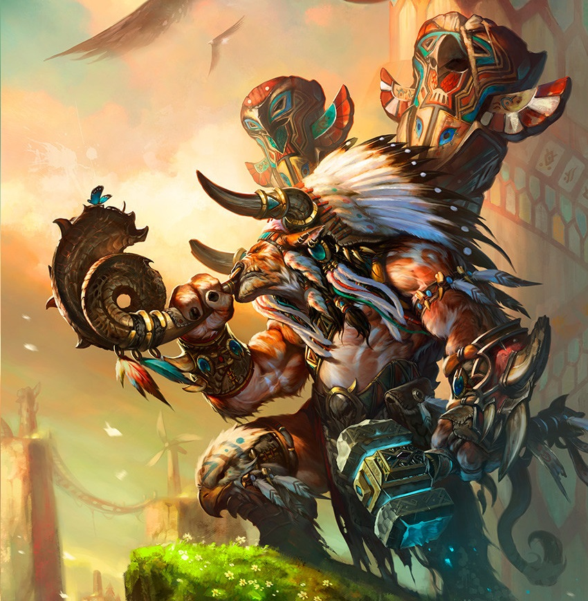

Baine
Baine Bloodhoof es el hijo del viejo Cairne Bloodhoof. Ha luchado junto a su padre con orgullo y respeto para defender a su gente contra las amenazas que los acechaban cuando se establecieron en las praderas de Mulgore. Sin embargo, en uno de los ataques de los centauros a su aldea, Baine fue capturado y trasladado a campamento enemigo. Trató de permanecer con vida a pesar del pesimismo que le ocasionaba ver como sus compañeros iban siendo asesinados uno a uno hasta que solo quedó él.
Fue buscado insistentemente por Tagar quien contactó con Rexxar que fue finalmente quien lo rescató y lo devolvió a su padre. Como agradecimiento, los tauren decidieron unirse a los orcos en el asalto a la fortaleza de Daelin Proudmoore.
Ya en Bloodhoof Village, Baine lideró una investigación sobre las operaciones de Venture y Cia en el este y una campaña contra los gnolls de la tribu Palemane en el oeste. Debido a la avanzada edad de su padre, la importancia de Baine va cobrando importancia con cada año que pasa. Su talento como guerrero es formidable pero le llevará tiempo llegar a igualar a su padre.
Cuando Brann Bronzebeard estuvo en Kalimdor y estudió a los tauren (cuyos escritos fueron recopilados en Lands of Mistery), tuvo la oportunidad de hablar con Cairne en Thunder Bluff sobre los enanos de Bael’dun Digsite. Baine reunió a un grupo de jóvenes tauren con la idea de enviar emisarios a la excavación de los enanos para convencerlos de que permitieran que un chamán supervisara sus actividades para asegurarse que la tierra no resultaba dañada durante sus extracciones. Baine les preguntó también sobre sus actividades comerciales con Venture y Cia — una incómoda cuestión para la que era más útil unos cuantos mandobles al aire de hacha que la diplomacia convenciona para hacer colaborar a los enanos. 